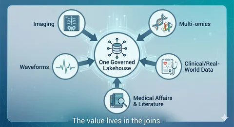
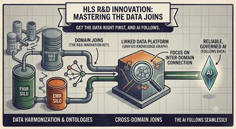

生物医学影像的真正瓶颈是数据，而非模型
DataHot 速览
文章第一部分指出，医院和卫生系统掌握原始影像数据，但数据锁在为阅片而非研究设计的PACS和厂商中立归档中；抽取队列需从临床系统取图、去标识化（PHI可能藏在DICOM头甚至像素中）并寻找算力。FDA截至2024年中批准的约950个AI/ML设备中，约723个（约76%）为放射学工具，几乎都是窄范围、人工监督的分诊、测量、重建或工作列表排序。学术界依赖MIMIC-CXR（377,110张胸片）、TCIA、fastMRI、UK Biobank及MONAI、nnU-Net、3D Slicer；但BMJ 2020综述的81项研究中仅少数为前瞻性或真实临床测试，93%和95%的研究代码与数据不可得。Medtech厂商（GE HealthCare、Siemens Healthineers、Philips、Canon）最难的是跨扫描仪泛化，需多中心训练数据并通过510(k)/PMA证明；Pharma/biotech则把影像作为测量工具，依赖RECIST、iRECIST、RANO等标准。
为什么值得关注：医疗影像AI的瓶颈不在模型而在数据获取、去标识、治理与跨机构复用；对做数据集成、治理和AI平台的人有直接借鉴。
本文目录 17 节
译文
AI 逐段翻译第一部分——问题
四个领域，同一个瓶颈
医院和卫生系统生成原材料。放射学是医学人工智能中监管最严格的角落：截至2024年年中，FDA已授权的约950款支持AI/ML的设备中，约723款（约76%）是放射学工具。几乎所有这些工具都是狭隘的、有人监督的，用于分诊、测量、重建或工作列表优先级排序。在医院里，真正的困难很少是模型本身。而是数据被锁在PACS（影像归档和通信系统）和供应商中立归档中，这些系统是为向查看器提供图像而构建的，而非为了回答研究问题。拉取一个队列意味着从临床系统中提取图像、对其进行去标识化（PHI藏在DICOM头中，并会烧录进像素），以及找到使用它们所需的算力。模型是那简单的10%。
学术医学中心是大多数开放科学发生的地方。该领域的许多进展要归功于共享数据集，如MIMIC-CXR（377,110张胸部X光片）、The Cancer Imaging Archive、fastMRI和UK Biobank的影像部分，以及MONAI、nnU-Net和3D Slicer等开放工具。学术界也暴露了该领域的可信度问题。一项著名的BMJ综述（Nagendran等，2020）对深度学习与临床医生影像研究的对比发现，在81项研究中，只有少数是前瞻性的或在真实临床环境中测试的，且93%和95%的研究中代码和数据不可用。这种可重复性债务直接追溯到影像数据有多难共享和重跑。
医疗科技和设备公司（GE HealthCare、Siemens Healthineers、Philips、Canon）将AI直接构建到扫描仪中：缩短扫描时间的深度学习重建、剂量降低、设备端分诊。它们最难的问题是泛化。在一个供应商的扫描仪、场强和协议上训练的算法，在另一个供应商的设备上可能会悄悄退化。策划代表真实世界的多站点训练数据，然后通过510(k)和PMA途径向监管机构证明，既是护城河也是成本。
制药和生物技术公司将影像视为测量仪器。肿瘤学试验依赖于标准化的反应标准，如RECIST、iRECIST和RANO，进行中心化和盲法阅片以消除站点偏倚，定量影像生物标志物可以比基于大小的测量更早地发现药物反应。除非一个测量在不同站点、扫描仪和时间上意味着同一件事，否则这一切都不起作用，这就是为什么RSNA的QIBA编写配置文件，将采集和分析固定到规定的精度。变异性是试验终点的敌人。
四项不同的工作，一个共同的瓶颈。像素无处不在，却无处可查询。
为什么协作是全部关键，以及为什么它如此困难
没有任何单一机构拥有足够多样化的数据来构建一个可泛化的模型。迄今为止最强的协作研究证明了这一点。在EXAM研究（Nature Medicine，2021）中，20家机构训练了一个共享模型，从胸部X光片加EMR数据预测COVID-19氧气需求，而无需在它们之间移动任何患者数据。只有模型权重在传输，联邦模型在AUC上平均提升了16%，在泛化性上比单站点模型提升了38%。其机制没有听起来那么奇特：每个站点在本地训练，协调者平均模型权重而非数据（经典的联邦平均配方），安全聚合和差分隐私防止任何单一站点的记录从这些权重中被重建出来。
这就是承诺。现实是，协作确实困难，原因在于结构性的而非技术性的：
- 数据异质性。不同的扫描仪、协议和标注惯例意味着“同一个”检查往往并非如此。联邦模型在这种非独立同分布、采集偏斜的数据上会退化，除非通过批归一化平均或站点感知协调等技术刻意围绕它进行工程设计。
- 隐私与治理。每项跨机构研究都带来各站点的IRB批准、数据使用协议，以及必须站得住脚的去标识化。
- 没有共同的基础。像MIDRC（由ACR、RSNA和AAPM共同领导）这样的联盟存在，正是因为接收、策展、去标识化、标注和共享如此困难，以至于需要一项专门的全国性努力。
影像中的协作不是锦上添花。它是通往在训练所在建筑之外也能工作的模型的唯一路径，而且它几乎完全受制于数据管道和治理。
该领域外大多数人从未见过的复杂性
当人们说“医学图像”时，他们通常想到的是胸部X光片。现实是一个格式和规模的动物园，让通用数据工具不堪重负。
| 影像类型 | 格式 | 维度与规模 | 为什么通用工具不堪重负 |
|---|---|---|---|
| 放射学——X光、CT、MRI | DICOM，可用约十几种传输语法编码（未压缩 → JPEG 2000 → HTJ2K） | 2D X光 → 3D CT/MRI体数据 → 4D动态心脏 | 为在机器之间传输检查而构建，而非批量分析；解码器（pydicom、GDCM、pylibjpeg）单线程运行——几个检查微不足道，几百万个则是一个分布式系统问题 |
| 数字病理学——全切片图像 | 供应商格式：Aperio .svs、Hamamatsu .ndpi、Philips iSyntax（通过OpenSlide）；几乎没有DICOM | 十亿像素级——数GB，数万个瓦片，以金字塔形式在多个放大倍率下读取 | 太大而无法打开到内存中；染色和扫描仪颜色因实验室而异，成为模型误差的独立来源 |
| 眼科、皮肤科及其他 | OCT体数据、临床摄影，各有自己的惯例 | 2D和3D，特定于模态 | 又一组格式，一个JPEG文件夹工具从未被设计来处理 |
“医学图像”不是一件事——它是一个格式和规模的动物园。研究档案达到PB级，规模之大使得对它们进行大规模去标识化本身就是一个已发表的研究方向。
还有第二类复杂性会悄然毁掉研究：数字本身在不同站点之间不可比。在两台扫描仪上用两套协议测得的标准化摄取值或肿瘤体积并不是同一种测量。这就是为什么定量影像要依赖 QIBA 配置文件这样的标准和 IBSI 对影像组学特征的定义，也是为什么通常失效的是可重现性，而不是原始准确度。
一个只能处理一文件夹 JPEG 的工具无法应对其中任何一点，这在很大程度上解释了为什么影像在成为可分析就绪的数据方面落后于基因组学和 EHR 数据。
影像只是一个更大问题最尖锐的边缘
当关注点只停留在图像上时，很容易忽略的是：这里的一切同样适用于研发的其他部分。影像只是痛点最先显现的地方，因为它的数据量最大、也最奇特。
今天走进一家生命科学研发机构，真正的前沿并不是任何单一数据类型。它是多组学——基因组学、转录组学、蛋白质组学和代谢组学，每一种都带着自己的格式和孤岛而来。它是真实世界数据和临床试验数据、EHR 和登记库以及波形数据。它是医学事务和文献。真正能推动一个项目前进的问题——哪些患者有响应以及为什么、影像加上分子特征加上结局合在一起说明了什么——存在于这些领域之间的连接处，而不是其中任何一个领域之内。
上述每一种数据类型都带有影像所具有的同一顽疾。它丰富、高维、大多非结构化，被困在领域特定的系统中，难以治理，更难以关联。一张全切片图像、一个基因组变异检出和一个试验终点，每一个单独处理都已经够难了。价值来自于把它们放进同一句话里。这首先是一个数据基础问题，而不是 AI 问题，而这正是各团队最低估的一个。
这不仅仅是一个医疗健康领域的故事。贝恩最近对为什么 AI 预算不断攀升而回报却不见增长所做的一项分析发现，数据获取与集成是 AI 的最大单一障碍，41% 的公司提到了它，而领导者提到它的频率甚至高于落后者。他们直白的说法是：大多数组织仍然无法可靠地访问自己的数据。医学只是让人更难对此视而不见。
第二部分——基础
从这里开始变得具体，也更具技术性。对于不是平台构建者的读者，简要版本很简单：在一处治理一切，让像素可查询，大规模去标识化，并把影像与患者的其他数据关联起来。本节的其余部分讲的是如何做到。
数据基础实际必须做什么
剥去行业特定的细节，需求都是一样的。平台必须：
- 在一处治理非结构化影像文件及其提取的元数据，具备经得起监管者质询的访问控制、血缘和可审计性。
- 处理 PB 级、十亿像素级、多维数据（2D X 光、3D CT/MRI 体数据、4D 动态研究、十亿像素病理切片）而不崩溃。
- 大规模去标识化，既包括文件头，也包括像素。
- 将影像与 EHR、基因组学、波形和文本关联起来，使单个研究问题能够触及所有这些数据。
- 让跨机构共享成为一个配置步骤，而不是一场长达六个月的谈判。
这就是湖仓一体的形态。下面说明它在实践中如何映射，使用在 Databricks 上行之有效的模式。
面向像素的奖章架构
让影像变得可控的思维模型，就是各团队已经用于表格数据的同一套奖章模式，只是针对二进制文件做了改造。
- 铜层：原始研究首先落入受限访问的云对象存储或 Volume，在那里先对文件头和像素运行去标识化作业，然后再做其他任何事；去标识化后的文件随后在 Unity Catalog Volumes 中构成受治理的铜层，每个文件对应一行编目，由 Auto Loader 处理增量到达，使新研究持续流入，而不是依赖脆弱的夜间批处理。
- 银层：将文本值的 DICOM 标签提取到 Delta 表中（像素数据等二进制大对象保留在文件中），这样原本被困在文件内部的元数据就可以用普通 SQL 查询。正是这一步把“查看器能打开它”变成了“分析师能查询它”。开源 Pixels 加速器做的正是这件事，并行编目文件并大规模提取标签。
- 金层：经策展的、可供分析的队列，与临床和组学表连接，准备好用于训练、BI 或面向监管者的研究。
这件事之所以不平凡，原因在于吞吐量。DICOM 解析库是单核的；诀窍在于把它们分布化。在实践中，这意味着用 pandas UDF 和 mapInPandas 将解析分散到整个集群，或者使用自定义 Spark 数据源。在 Pixels 团队发表的工作中，一个 zipdcm 数据源直接在内存中从 zip 归档读取 DICOM 元数据，原始文件保持压缩不动：它在两个 8 核 worker 上大约 3.5 分钟内编目了超过 107,000 个 DICOM，比先前的方法大约快 7 倍。瓶颈从磁盘和网络 I/O 转移到了纯 CPU 解析，而这正是集群擅长的事情。
经得起审计的治理
影像是非结构化数据治理的终极难题，也是大多数平台悄无声息失败的那个要求。Unity Catalog Volumes 在三级命名空间下治理 S3、ADLS 或 GCS 中的原始文件，而提取的元数据落入 Delta。两者都处于同一个访问控制和血缘模型之下，该模型一直延伸到基于这些数据训练的模型，这使得几个月后仍有可能回答“谁接触过这个队列，以及从它构建出了什么”。行级和列级安全以及基于属性的规则，让组织可以广泛地开放去标识化元数据，同时牢牢锁住底层的像素。
去标识化才是真正见真章的地方。表头中的 PHI 通过格式保留加密处理，因此同一个患者标识符始终映射到同一个假名。这个细节比看上去更重要：它意味着患者的 CT 仍然可以跨数据集关联到其病理和检验结果，而无需暴露真实标识符。DICOM 标准的保密性配置文件定义了哪些要剥离、哪些要保留。更困难的问题是烧录进像素中的 PHI，比如超声图像或扫描表单中嵌入的患者姓名。像 Presidio 这样的经典工具擅长处理自由文本，但会漏掉图像。移除这种烧录进像素的 PHI 是一个活跃的研究问题：近期工作表明，在检测和遮蔽此类信息方面，视觉语言模型现在已优于仅用 OCR 的流水线（Lee 等，Radiology 2025），而将 DICOM 元数据清洗与针对烧录文本的定向 OCR 相结合的生产级去标识化方法，已在跨越十种模态的数十万张图像上得到验证（Macdonald 等，2024）。在像素方面，Pixels 团队发布了一个视觉语言模型流水线，它将 OCR 与 VLM 相结合，并通过 pandas UDF 分布式运行。在来自 MIDI-B 基准的平衡样本上，GPT-4o 和 Claude 3.7 Sonnet 达到了约 100% 的召回率和精确率，开源模型 Llama 4 Maverick 以极低的成本实现了 100% 召回率，而 Spark 将 1,000 帧的去标识化时间从 105 分钟缩短到 6 分钟。该团队还在探索一种更精简、仅使用 VLM 的方法，以进一步推进这一目标。
在同一受治理数据之上进行训练和推理服务
一旦像素可查询且受治理，ML 层就不再是困难的部分。分割和分类模型与 MLflow 模型一样注册在同一个目录中，其血缘可追溯到它们训练所用的确切队列。具体到影像方面，NVIDIA MONAI 和 VISTA-3D（一个覆盖 127 个解剖类别的基础分割模型）可接入用于自动分割和微调，同时 OHIF 查看器嵌入在 Databricks App 中，使放射科医生或病理学家能够在该平台的安全模型下进行审阅、修正和重新标注。
MONAI Label 的主动学习循环意味着每次修正都会改进下一批结果，这正是团队走出“必须先拥有完全标注数据集才能开始”这一陷阱的方式。推理既可以作为实时 GPU 模型服务运行（缩容至零，因此很少使用的模型不会持续占用 GPU），也可以作为跨数百万项研究的分布式批量推理运行。而且，由于较新的 Pixels 工作提供了一个 DICOMweb 服务（QIDO-RS、WADO-RS、STOW-RS），湖仓可以直接处于临床或 PACS/VNA 工作流之中，而不是置身事外。
证明其安全性：验证、漂移和监管路径
训练模型是起点，而非终点。在一个站点的扫描仪上表现出色的模型，可能会在另一个站点上悄然退化，因此真正的工作是跨站点、跨供应商、跨协议的外部验证，然后随着扫描仪升级和生产中的协议变化监测漂移。MLflow 负责评估和跟踪；更难的纪律是将每个模型视为带有队列、指标和审批的版本化资产。对于任何走向临床的东西，监管机构已开始以适应型 AI 的方式与之对接。FDA 的预定变更控制计划（PCCP）让团队可以预先规定模型如何重新训练和更新，而无需每次都重新提交，良好机器学习规范（GMLP）则设定了对数据、验证和监测的期望。将这些护栏构建到数据基础中，而不是事后临时加装，正是区分演示和医院愿意部署的东西的关键。
不移动数据即可协作
有两种互补的方式可以获得 EXAM 所表明必要的跨机构多样性，它们解决的是不同的问题。
联邦学习将数据物理上保留在原处，只移动模型权重，通过联邦平均将它们组合起来，并利用安全聚合加差分隐私防止任何站点的数据泄漏回去。当数据在法律上完全不能移动时，这是正确的工具。
湖仓增加了第二种在实践中往往更简单的选择：Delta Sharing 和 Clean Rooms 让机构可以共享受治理的表和文件（或对去标识化队列进行联合分析），而无需复制任何内容，使用凭证发放而非数据导出。对于许多多站点研究而言，“共享队列的受治理视图”比搭建联邦训练环要轻便得多，而且两者可以混用。
使影像具备多模态能力
这一需求将影像从一种独立模态转变为患者的一部分。由于元数据只是 Delta，影像可以连接到来自 EHR 的 FHIR 和 HL7 数据流、基因组变异表、波形以及临床文本，患者身份通过假名化层解析。像 OMOP 这样的通用数据模型为观察性数据提供了统一的落地模式。在此基础上，Vector Search 为语义检索索引嵌入（Pixels 甚至提供了一个将普通英语术语映射到正确 DICOM 标签的函数），而像 Genie 这样的自然语言工具让科学家可以通过提问来构建队列，而无需编写 SQL。
生理波形是另一类数据。心电图、动脉压轨迹，或 IVUS 或 OCT 回拉，是以每秒数百或数千次采样的高频时间序列，通常以 WFDB 等格式存储，而非 DICOM。技术难点在于对齐：回拉帧或心搏只有与图像及其所属的临床事件进行时间同步后才有意义。做好这一点，包括重采样、协调时间戳，并将序列存储在研究旁边，正是当问题变成患者为何有反应而不仅仅是有没有反应时，能够带来回报的那种连接。
嵌入还能解锁比搜索更强大的能力。基于配对的扫描图像和报告训练的图像-文本模型（BiomedCLIP 和 CheXzero 系列工作）将图像和语言置于共享的向量空间中，因此系统可以检索相似病例、在没有显式标签的情况下标记发现，或将生成式模型建立在患者实际图像和既往报告之上，而不仅仅依赖其训练数据。最后这一模式，即基于图像加报告的检索增强生成，正是让报告起草和病例摘要足够可信、能够展示给临床医生的关键：模型可以指出它看到了什么。只有当图像、报告及其嵌入共处于同一个受治理的屋檐下时，这一切才能奏效，而这正是整篇文章的缩影。
这同样也是新一代基础模型所需要的。Prov-GigaPath（《Nature》，2024 年）在来自 171,189 张全切片图像的 13 亿个图块上以自监督方式预训练，只有大规模、多样化、受治理且多模态的数据才能让它发挥作用。数据孤岛无法喂养它。湖仓一体可以。
回报：研究者的 AI 共同科学家，临床医生的 companion
这一切的具体形态并不是一个取代任何人的自主系统。它是一个 companion，是研究者的 AI 共同科学家，也是临床医生的副驾驶，其根基是机构自身受治理的数据，而非开放互联网。
对于研究者而言，共同科学家 agent 能将一个问题转化为工作。让它"找出有基线 CT、匹配病理和 EGFR 状态的初治 NSCLC 患者，然后总结随访中病灶如何变化"，它就会规划步骤，通过 Genie 空间查询影像和临床表，用 Vector Search 检索相似病例，调用分割端点来测量病灶，并将其摘要建立在相关文献之上，每一条论断都可追溯到它所使用的数据。
新兴的"AI 共同科学家"系统正是以此为目标的：帮助生成和分诊假设，而不仅仅是回答查询。区分玩具与可信协作者的关键，在于它是否建立在受治理的多模态数据之上。
对于临床医生而言，同样的机制会变成一个 companion，承担放射科医生或肿瘤科医生原本需要手工完成的繁琐工作：调取患者的既往资料、测量和比较病灶、呈现适用的指南标准，并起草报告供审核。它从不签字确认；由人来签字。这不是局限，而是设计本身。如今几乎所有已获批的影像 AI 都是人在监督下运行的，而一个能展示其工作过程并引用其来源的 companion，才能让这种监督成为真正的监督，而不是橡皮图章。

让两者中任何一个安全的关键在于底层基础。agent 调用的每一个工具都是一个受治理的对象——Unity Catalog 函数、模型服务端点、Vector Search 索引、Genie 空间——因此，保护像素的同一套访问控制、血缘和代表身份机制，也界定了 agent 能够看到什么、做什么。将专家（放射科 agent、基因组学 agent、医学事务 agent）组合在监督者之下，这个 agent 团队便映射出数据基础已经使之成为可能的多模态连接。一旦基础正确，companion 就是容易的部分。
超越影像：同一个基础承载研发的其余部分
这件事之所以在放射学之外也重要，是因为完全相同的架构能够吸纳研发数据资产的其余部分。多组学（基因组学、转录组学、蛋白质组学、代谢组学）与影像和临床数据一同落入同一个 Unity Catalog。它带来了自身的重型格式和标准——用于变异的 VCF、用于比对测序读段的 BAM 和 CRAM、使它们保持互操作的 GA4GH 规范，以及用于群体规模分析的 Glow 和 Hail 等引擎——但湖仓一体的模式是相同的：治理文件，提取可查询层，将其与其余一切连接起来。
这也是 NVIDIA 技术栈（如 BioNeMo 和 NIM）为序列和结构模型接入的地方。真实世界和临床试验数据、登记库以及波形无需导出即可与影像队列连接。医学事务和文献在同一套治理以及同一个 AI/BI 和 Genie 界面之下成为可查询的文本。向前推进的项目——那些回答哪些患者有响应以及为什么的项目——存在于这些领域之间的连接中，而湖仓一体是罕见的架构，能够在一种治理模型下容纳千兆像素切片、变异调用和试验终点，并让它们被一起查询。
总结

在这类数据之上构建 AI 和 GenAI 的团队不断遇到同样的教训。一个模型可以在一周内做出不错的演示。之后要花上数月的是让数据变得干净、关联、去标识化且受治理程度足以在科学家或监管者面前获得信任。数据问题不是项目中不起眼的部分。它就是项目本身。
纵观同一组织内的影像、组学、临床和医学事务数据，结论很简单。医学影像的前沿不是更好的架构。而是更好的基础。算法已经存在。数据也存在于某处。一直缺失的是一种方式，让影像变得受治理、可查询、可关联且可共享，并与研究问题所触及的其余一切相连接，同时不放弃医学所要求的隐私和严谨性。
在研发中胜出的团队不会是那些首先追逐模型的人。而是那些先把数据做对、让 AI 随后跟上的人。解决了这一点，模型就会变成容易的部分，一如它一直以来的样子。
从何处开始
测试这一点的最快方式就是在你自己的数据上尝试。
- 从开源 Pixels 加速器开始（databricks-industry-solutions/pixels）将一文件夹 DICOM 转换为受治理、可查询的 Delta 表，并亲眼看到 medallion 模式的实际运作。
- 在 Databricks 上运行它。 启动一个工作区，将 Unity Catalog Volumes 指向 TCIA 或 MIMIC-CXR 等公共数据集，并在引入受保护数据之前端到端搭建摄取、去标识化和一个 OHIF 查看器。
- 深入工程细节了解这些数字背后的内容：上面链接的 7 倍摄取、VLM 去标识化以及 MONAI/VISTA-3D 文章。
- 从一个队列扩展到整个资产。一旦单一研究类型被摄取、去标识化并连接到一个临床表，同样的模式就会扩展到多组学、真实世界数据以及其上的智能体层。
如果你的团队正在 Databricks 上朝着医学影像或多模态研发方向建设，作者们很想了解你是如何着手的。请联系我们或留言，当你准备从试点走向生产时，Databricks 医疗与生命科学团队可以帮助你实现这一目标。
这篇内容对你有用吗？
反馈只用于改善内容筛选，不等同于收藏